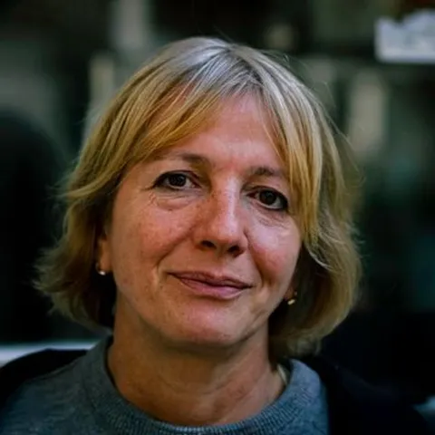
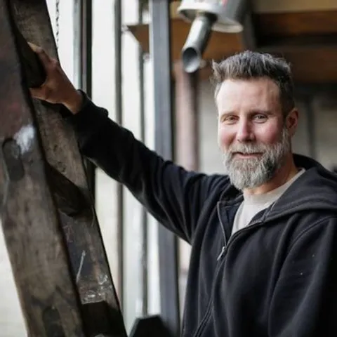
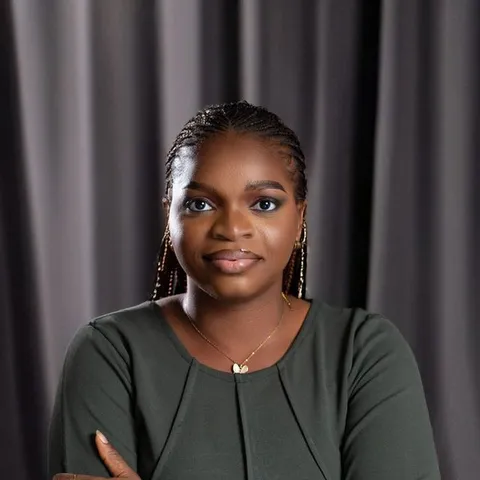
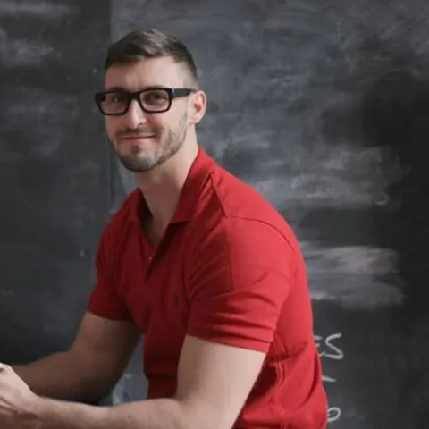

- Home
- Studio
Eleven people. One long table.
We stay small on purpose, so every project gets a director’s full attention from first sketch to final snag.
The practice
Founded on a kitchen table in 2011.
Elin Sørensen started Atelier Nord with a laptop, a roll of tracing paper and a single commission: a boathouse for a friend. The boathouse was finished under budget and the friend told two friends.
Fifteen years on, we are eleven architects and designers in a converted print works on Leith Walk. We still draw first, we still visit every site, and we still share one long table for lunch.
The directors & leads

Elin Sørensen
Founding director
Trained in Bergen and Edinburgh. Believes the best drawings are the ones you can rub out.

Callum Reid
Director · timber & conservation
Has repaired more roofs than he can count, and designs as if the next repair will be made by his grandson.

Maya Okafor
Associate · sustainability
Our Passivhaus designer and the person who says “but what is the U-value?” in every meeting.

Jonas Whitlock
Architect · education
Spends one day a month teaching in schools to understand how children use buildings.
Priyanka Das
Architect · housing
Obsessed with front doors, shared gardens and the exact width of a good staircase.
Process
Five steps, no surprises.
Every project follows the same calm rhythm, adapted to its size.
- Listen
We visit the site, meet the people who will use the building and write a one-page brief everybody signs.
- Sketch
Pencil and tracing paper, then physical models. We show options early and argue about them openly.
- Test
Daylight, energy, cost and construction are checked at every stage, so surprises are cheap.
- Build
We stay close through construction, visiting site weekly and solving problems with the builders.
- Care
A year after handover we return to see how the building is really lived in, and tune it.
Recognition
- RIAS AwardUllapool Library, 2024
- Passivhaus TrustBirch Court School, 2025
- Scottish Design AwardHouse on the Skerry, 2024
- Civic TrustTide Mill Studios, 2025
Join us
Open roles
We hire slowly and keep people for a long time. Send a few pages of work and a note about a building you love.
Part II Architectural Assistant (Edinburgh)
Join a small team working on schools and housing. You’ll draw, model and visit sites from week one. Full-time, from £28,000.
Passivhaus Designer (hybrid)
Lead energy modelling on three live projects. PHPP experience required. Full-time, from £38,000.
Studio Manager (part-time)
Keep a creative studio calm and organised: finance, people and project administration. Three days a week.